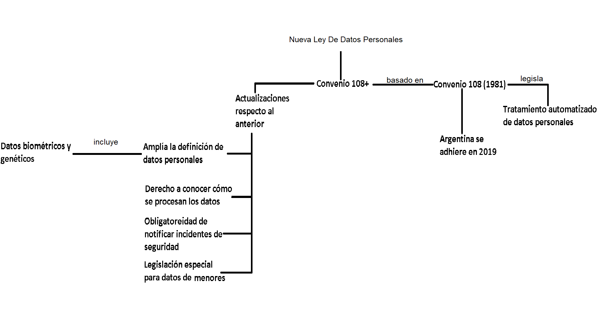

El Convenio N° 108 es un tratado internacional sobre la protección de datos personales que fue adoptado por la Organización Internacional del Trabajo (OIT) en 1981. El objetivo principal del Convenio 108 es establecer un marco jurídico para garantizar la protección de la privacidad de las personas en relación con el procesamiento automatizado de sus datos personales. Argentina firmó el Convenio 108 el 1 de junio de 2019, pero aún no lo ha ratificado. Sin embargo, el país cuenta con una ley de protección de datos personales (Ley N° 25.326) que establece una serie de principios y obligaciones similares a las establecidas por el Convenio 108. Entre los principales principios establecidos por la ley argentina se encuentran el consentimiento informado de los titulares de los datos, la finalidad específica del procesamiento, la calidad de los datos, la seguridad de los mismos y el derecho de acceso y rectificación. En resumen, aunque Argentina aún no ha ratificado el Convenio 108, cuenta con una ley de protección de datos personales que establece principios y obligaciones similares a los establecidos por dicho convenio.
